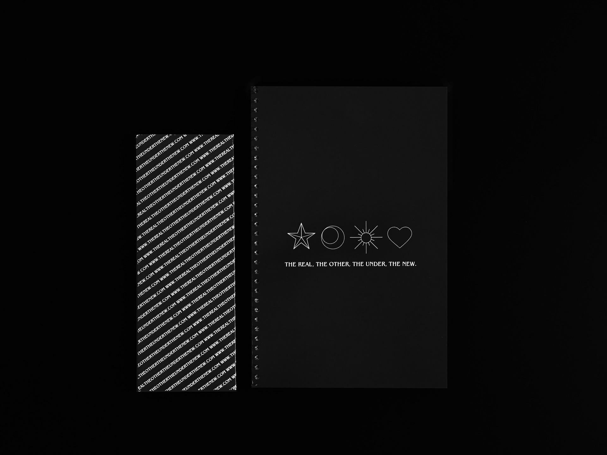
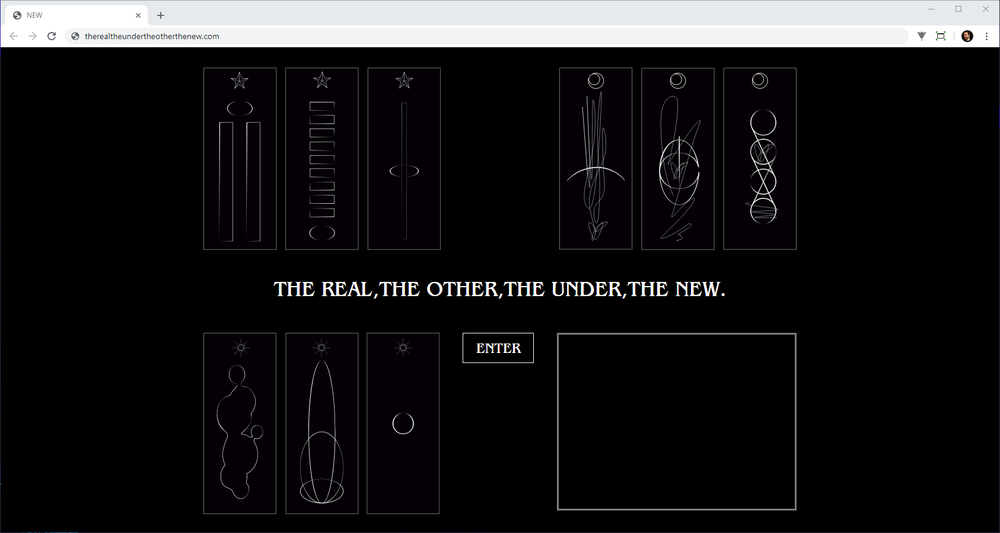

These worlds relate to different ways of perceiving noise and the way it is produced.
Each world is inhabited by three entities — three compositions — each physically manifestated in the form of a card. By grouping the cards from each world and inserting them in a website, one can unlock exclusive contents. However, these contents can only be experienced once.

Discardable card container and booklet for storage of the cards.
Website on the final section, 3 experiences have been unlocked.
_ FROM THE REAL WORLD
In this stage, one can find compositions that mirror the sounds of the real world or were inspired by the organization of anything that can be perceived by our senses. Everything that is physical and epistemological.

After progressing through this section, the three tracks would be played in the following page.
_ FROM THE OTHER WORLD
The other world is a world that exists beyond the physical - the
digital world. Upon the introduction of the magnetic tape, artists
began to explore its potential by creating electronic sounds.

_ FROM THE UNDER WORLD
The underworld represents indiscernible sounds whose sources
cannot be understood. Upon hearing them we cannot pin down if
they are produced by humans, machines or both. This plain is
inhabited by entities that go beyond the human consciousness.
It pushes the previous world to an extreme, going in depth into the
most excessive expressions of the genre.

_ FROM THE NEW WORLD
In the new world, a new vision of what noise can be arises.
A reinterpretation of it. Where does noise exist beyond the obvious?
A closer look reveals noise everywhere, even in silence.